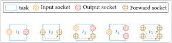

Socket¶
Sockets are used to exchange data between tasks. There are 3 different types of sockets:
- Input socket (
socket_t::SIN): read only data, - Output socket (
socket_t::SOUT): write only data, - Forward socket (
socket_t::SFWD): read and write data.
A task can have multiple sockets of different types (input, output and forward). This is illustrated in the following figure:

A socket is a C++ object of the spu::runtime::Socket class. The following
sections try to give an overview of the most important attributes and methods
to facilitate the code understanding.
Main Attributes¶
Define the socket typeIN, OUT or FWD.
Custom name for the socket.
The type of data exchanged.
Pointer to the data of the socket (memory space).
The input or forward sockets bound to the current socket. Only relevant
for output or forward sockets.
The unique output or forward socket bound to the current socket. Only
relevant for input or forward sockets.
Main Methods¶
The most important methods of the socket class are bind and unbind.
input or forward socket and takes as parameter an output or forward socket.
The function gets the caller's dataptr and redirects it to s_out dataptr.
Below some examples of valid and invalids socket bindings :


For invalid socket bindings, StreamPU will throw an exception at runtime.
Note
s_out must be bound to the caller socket otherwise StreamPU will
throw an exception.
Standard SIN/SOUT Sockets versus SFWD Socket¶
Using a couple of SIN/SOUT sockets or a single SFWD socket can have an
impact on the code behavior and on the performance of the application. The most
important point is the impact on the socket dataptr attribute.
- In the case of
SIN/SOUTsockets, the input and the output sockets have their owndataptr. Theinputsocket receives the pointer from its bound socket and theoutputsocket has its own allocated memory space, the data received and computed by the task are written to theoutputmemory space. The initial data are not modified in this case, there are no side effects. - In the case of a single
SFWDsocket, the socket receives itsdataptrfrom the bound socket like aninput. But unlike in theSIN/SOUTcase, the computed data are written directly on the provided memory space, thus overwriting it (and potentially losing important information), there are side effects.